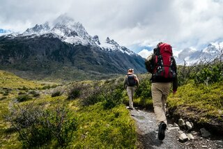

Bloomington Lake Trail

With the weather being nice and warm we wanted to highlight a lovely place to go on a hike. Bloomington Lake Trail is a 1.6 mile moderately trafficked out and back trail located near Bloomington, Idaho that features a lake and is good for all skill levels. The trail is primarily used for hiking and nature trips and is best used from June until October. Dogs are also able to use this trail but must be kept on leash. The trail boasts of beautiful wildflowers and the lake is a great place for a swim to cool off. Don't forget your sunscreen!